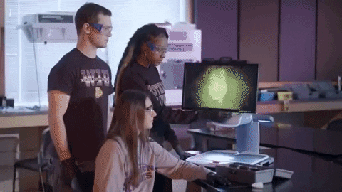

É a aplicação de qualquer ramo da ciência para responder a questões de interesse legal. Ela é a testemunha silenciosa que revela a verdade através de fatos e evidências.
É o braço digital da ciência forense. Nós somos os detetives digitais que coletam, preservam, analisam e apresentam dados de mídias eletrônicas para desvendar o que aconteceu.

Semana 1: A Tríade da Segurança da Informação (CID)
Toda investigação forense digital nasce da violação de um ou mais destes pilares fundamentais.
Confidencialidade
A informação só pode ser acessada por quem tem permissão. Quebra: Vazamento de dados, espionagem.
Integridade
A informação é exata, completa e não foi alterada. Quebra: Fraude, alteração de logs, ransomware.
Disponibilidade
O sistema e os dados estão acessíveis quando necessários. Quebra: Ataques DDoS, sabotagem.
Em 1986, o astrônomo Clifford Stoll, atuando como administrador de sistemas, notou um erro de contabilidade de 75 centavos. Ao investigar, descobriu um hacker (ligado à KGB) que usava seu sistema como ponte para invadir redes militares dos EUA. Ele documentou tudo, criando um dos primeiros exemplos práticos de forense de redes.
Lição: Pequenas anomalias podem esconder grandes incidentes. A persistência e a documentação rigorosa são as maiores armas do investigador.
A teoria ganha vida quando vemos como a perícia digital resolveu crimes reais e complexos.
Caso Henry Borel (BR)
A análise do celular da mãe e a recuperação de mensagens e fotos apagadas com a ferramenta Cellebrite foram cruciais para desmentir depoimentos e reconstruir a dinâmica dos fatos. Demonstrou a importância da perícia móvel.
Após anos de silêncio, o assassino enviou um disquete para a polícia. A perícia recuperou metadados de um arquivo deletado que apontavam para "Dennis" na "Christ Lutheran Church", levando diretamente à prisão de Dennis Rader.
Embora mais antigo, foi um marco no uso da ciência forense no Brasil. A condenação se baseou fortemente em evidências periciais como análise de DNA do sêmen encontrado nas vítimas e odontologia forense para analisar marcas de mordida.
Mais exemplos que mostram o poder da evidência digital em diferentes contextos.
Joseph E. Duncan III
Uma planilha recuperada do computador do serial killer continha o planejamento detalhado de seus crimes. A perícia transformou o arquivo em uma prova irrefutável de premeditação, sendo crucial para sua condenação à pena de morte.
O médico de Michael Jackson foi condenado com base em evidências digitais em seu computador. Um documento de Word continha registros médicos que mostravam o uso de quantidades letais do anestésico Propofol fora do ambiente hospitalar.
LGPD: Impõe regras rígidas sobre o tratamento de dados pessoais durante as investigações.
Códigos Processuais
Código de Processo Penal: Essencial. Exige a perícia quando a infração deixa vestígios (Art. 158) e define a Cadeia de Custódia.
Código de Processo Civil: Regulamenta a prova pericial em processos cíveis e a nomeação do perito judicial.
Semana 2: A Fronteira da Lei - Redes Sociais
A Regulação das Plataformas e o STF
O debate sobre a regulação das redes sociais (PL 2630, "PL das Fake News") e as decisões do STF sobre moderação de conteúdo e responsabilidade das plataformas estão mudando o cenário legal no Brasil.
Principais Pontos em Discussão
Dever de Cuidado: As plataformas (Meta, Google, X) teriam a obrigação legal de identificar, moderar e remover conteúdos ilícitos.
Transparência: Obrigatoriedade de relatórios sobre como os algoritmos funcionam e como a moderação é feita.
Responsabilidade Civil: As plataformas poderiam ser responsabilizadas por danos causados por conteúdos de terceiros que elas não moderaram adequadamente.
Implicações para a Perícia Forense
Esta regulação, se aprovada, será uma revolução para a perícia digital:
Novas Fontes de Evidência: Acesso a relatórios de transparência e dados de moderação, antes "caixas-pretas".
Rastreabilidade Aprimorada: Facilita a identificação de usuários anônimos em investigações.
O Ônus da Prova: A perícia pode precisar provar que a plataforma falhou em seu dever de cuidado.
Semana 2: O Perito em Ação
Perito Oficial vs. Assistente Técnico
Ambos analisam as evidências, mas seus papéis e compromissos são distintos.
Perito Oficial/Judicial
Nomeado pelo Estado (Polícia) ou pelo Juiz. Seu compromisso é com a verdade e a justiça. Ele é imparcial e responde aos quesitos (perguntas formais) do juízo e das partes. Seu trabalho gera o Laudo Pericial.
Assistente Técnico
Contratado por uma das partes (acusação ou defesa). Atua para garantir que a perícia oficial seja correta e para interpretar os dados sob a ótica de seu cliente, sempre com ética. Seu trabalho gera o Parecer Técnico.
Semana 2: Para Saber Mais
Aprofunde seu Conhecimento Legal e Ético
Livro: "Tratado de Computação Forense" de Pedro Eleutério. Uma obra de referência técnica e processual no Brasil.
Filme: "O Dilema das Redes" (The Social Dilemma, 2020 - Netflix). Essencial para entender o "dever de cuidado" das plataformas e as implicações éticas dos algoritmos.
Site:ConJur - Tecnologia Jurídica. Acompanhe as últimas discussões e decisões judiciais sobre direito digital no Brasil.
Pesquisar: "Standard Operating Procedure (SOP) for Digital Forensics" e "Princípio de Locard na Forense Digital".
Fim da Semana 2
Dominamos a base teórica e legal. Agora estamos prontos para colocar a mão na massa!
Na próxima semana: A prática começa! Vamos mergulhar na Cadeia de Custódia e na Coleta de Evidências.
Semana 3: O Mapa da Investigação
As 4 Fases do Processo Forense Digital
Toda perícia segue um método rigoroso para garantir que a evidência seja admissível, confiável e defensável em tribunal.
1. Identificação
Reconhecer e delimitar as fontes de dados: PCs, celulares, servidores, nuvem, IoT. Priorizar dados voláteis (como memória RAM) é crucial.
2. Coleta/Aquisição
Extração segura dos dados, criando uma cópia bit-a-bit (imagem forense) e usando bloqueadores de escrita para não alterar o original.
3. Análise/Exame
Busca por evidências (arquivos, logs, e-mails, etc.), recuperação de dados deletados e reconstrução da linha do tempo dos eventos.
4. Apresentação
Formalização de todas as descobertas em um Laudo Pericial claro, objetivo e tecnicamente fundamentado.
Semana 3: A Corrente Inquebrável
O que é a Cadeia de Custódia?
É o histórico documentado que prova quem manuseou a evidência, quando, onde e por quê, desde sua coleta até o tribunal. Se essa corrente se quebra, a prova pode ser invalidada.
Art. 158-A do CPP: "Considera-se cadeia de custódia o conjunto de todos os procedimentos utilizados para manter e documentar a história cronológica do vestígio..."
O Papel do Hashing na Cadeia de Custódia
O hash é a "impressão digital" da evidência. Calculamos no momento da coleta e comparamos a cada etapa. Se o hash mudar, a integridade da prova foi comprometida. É a nossa garantia matemática de que nada foi alterado.
Semana 3: A Bússola do Perito
Norma ABNT NBR ISO/IEC 27037:2013
Enquanto o CPP nos dá o "o quê", a norma ISO 27037 nos dá o "como". Ela é o nosso guia de boas práticas reconhecido internacionalmente.
O que a norma estabelece?
Diretrizes detalhadas para as fases de Identificação, Coleta, Aquisição e Preservação de evidências digitais. Seguir essa norma fortalece a validade do trabalho pericial e o torna defensável contra questionamentos técnicos.
Semana 3: Legalidade e Dilemas Éticos
Onde a técnica encontra a consciência.
Mandado de Busca e Apreensão
É a "chave de entrada" legal. Sem um mandado judicial, a coleta de provas em locais privados é ilícita e será descartada pelo juiz. O perito deve sempre atuar dentro dos limites do que foi autorizado.
Dilema: E se eu achar algo a mais?
Você está periciando uma fraude e encontra material de pornografia infantil. O que fazer? Ignorar está fora de questão. O dever ético e legal do perito é documentar o achado e comunicar formalmente às autoridades através dos canais corretos (delegado, juiz), para que uma nova investigação seja aberta. Ferramentas como o NuDetective da PF auxiliam nessa tarefa.
Semana 3: Para Saber Mais
Aprofunde seu Conhecimento sobre o Processo
Leitura: Os artigos 158-A a 158-F do Código de Processo Penal. É essencial conhecer a letra da lei.
Série: "For Life" (Netflix). Mostra a importância do processo legal e como falhas podem levar a condenações injustas.
A área enfrenta desafios constantes: a volatilidade dos dados (RAM), o avanço da criptografia, a complexidade da nuvem e IoT, técnicas antiforenses e o volume massivo de dados (Big Data), além da validação de conteúdo gerado por Inteligência Artificial (deepfakes).
Sua função é identificar, preservar, analisar e apresentar dados digitais com valor probatório.
O Processo de Atuação
Identificação: Reconhecer fontes de dados (PCs, nuvem, IoT).
Coleta: Extração segura dos dados, geralmente com espelhamento (imagem forense).
Análise: Exame técnico em busca de padrões, reconstrução de eventos e recuperação de dados deletados.
Preservação: Manter a integridade da evidência através da rigorosa cadeia de custódia.
Habilidades Essenciais
Conhecimento Técnico: Domínio de SO, redes, nuvem e sistemas de arquivos.
Conhecimento Legal: Entender o impacto jurídico e as leis (CPP, LGPD, Marco Civil).
Ética e Imparcialidade: Atuar com rigor, proteger a privacidade e possuir fé pública (no caso do perito oficial).
Capacidade Analítica: Pensamento crítico para conectar os pontos e encontrar a "agulha no palheiro" digital.
Ferramentas e Desafios
O perito utiliza um arsenal de hardware (write-blockers) e software (Autopsy, IPED, FTK, Cellebrite, Volatility) para investigar desde HDs e celulares até sistemas em nuvem e drones. Os maiores desafios são a criptografia, o volume de dados, a complexidade da IoT e o combate a deepfakes gerados por IA.


/i.s3.glbimg.com/v1/AUTH_da025474c0c44edd99332dddb09cabe8/internal_photos/bs/2023/y/p/WAnmslQiA308eWx8jHJg/40527651-05081998-elias-eberhardt-correio-do-povo-pa-francisco-de-assis-pereira-acusado-de-ser.jpg)